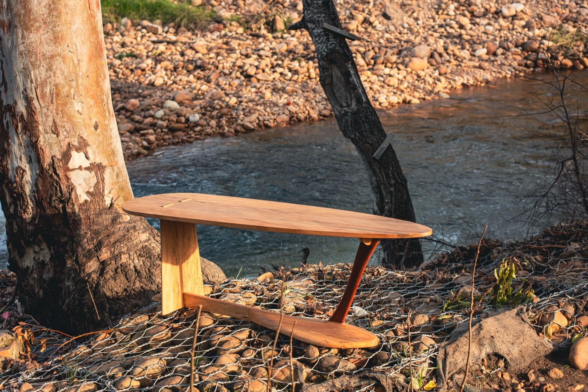
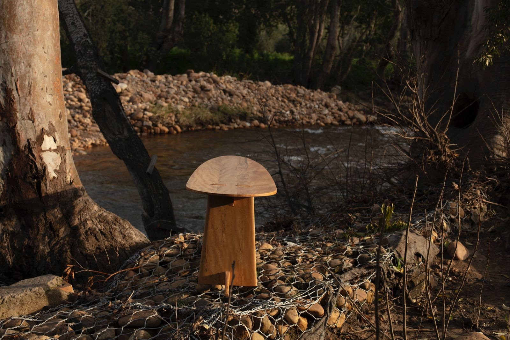

Sculptural furniture
Reef Table
A flowing tabletop balanced on contrasting supports, with visible joinery and a low, curved stretcher connecting the form.


Interested in this piece or a related commission?
Enquire about the Reef Table